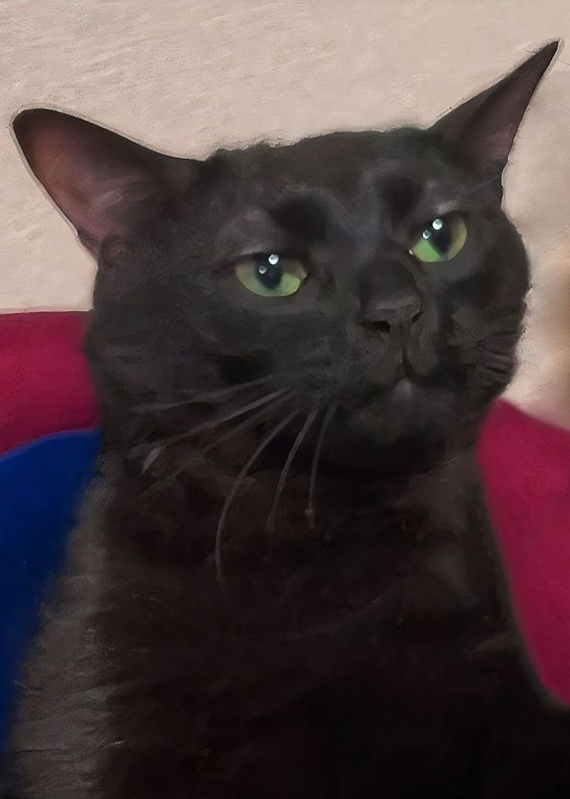
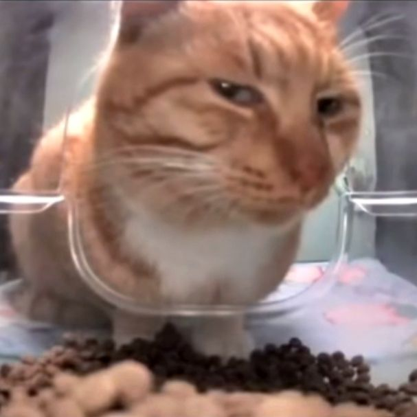
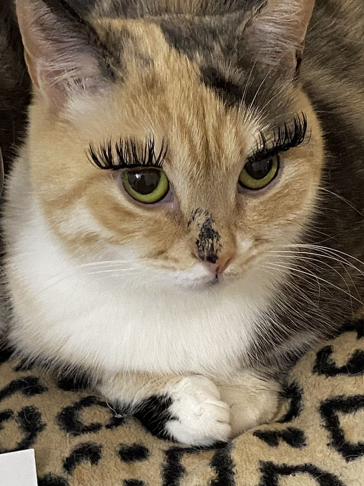

Зигмунд
Интеллигентный кот с серьёзным выражением морды. Очень умный, по его взгляду видно — открывает ящики, любит пить воду из крана и всегда приходит на звук открываемой банки.
Забрать домойВсе кошки привиты, стерилизованы и готовы к переезду в новый дом

Интеллигентный кот с серьёзным выражением морды. Очень умный, по его взгляду видно — открывает ящики, любит пить воду из крана и всегда приходит на звук открываемой банки.
Забрать домой

Очень хороший мальчик, я бы его депутатом назначила. Любит запрыгивать на шкафы и наблюдать сверху за всем, что происходит. Ласковый, но только когда сам этого хочет. Отлично ловит мышей (и носки).
Забрать домой